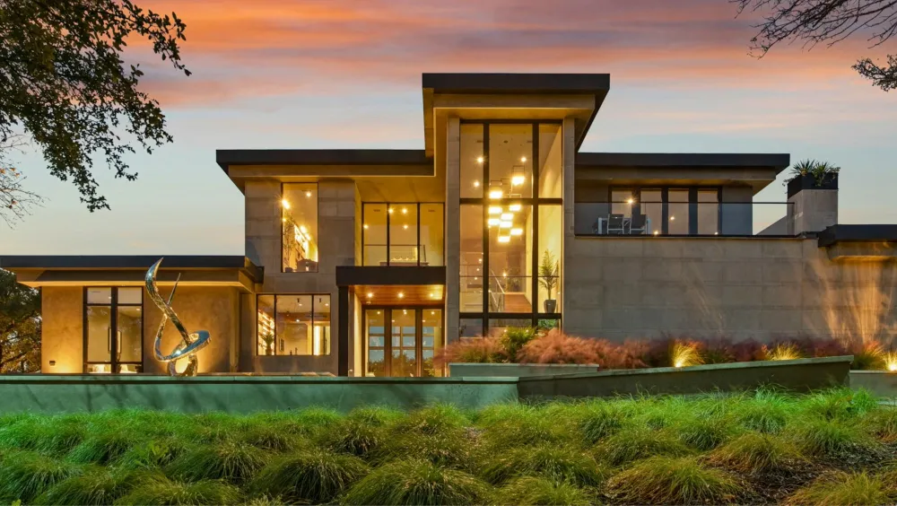

01
Fit before catalog
We evaluate the site, intended use, and operating model before narrowing the equipment path.

About AmpIQ
AmpIQ exists to give property owners clear judgment and an accountable advocate in a market built around selling individual pieces.
Why AmpIQ
The right answer starts with what the property needs, not with what a vendor has to sell.
01
We evaluate the site, intended use, and operating model before narrowing the equipment path.
02
We distinguish confirmed facts from assumptions so owners know what the project has actually proven.
03
Recommendations account for long-term flexibility, customer experience, data, and operating responsibility.
How we work
Infrastructure projects become expensive when assumptions pass between parties without a clear owner.
01
We identify what must be decided now, what can wait, and what evidence is needed.
02
We clarify who owns each technical, utility, vendor, and operating dependency.
03
We translate changing inputs into clear choices, consequences, and next actions.
What we do
Our services can answer one decision or coordinate the full delivery path.